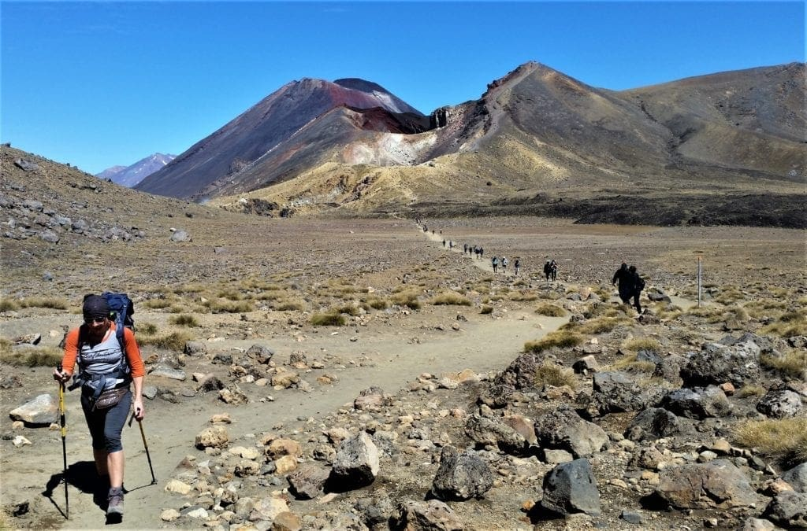
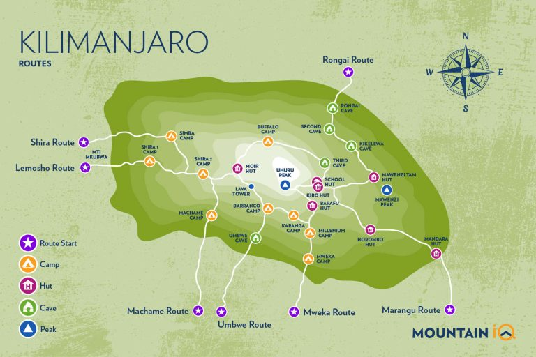
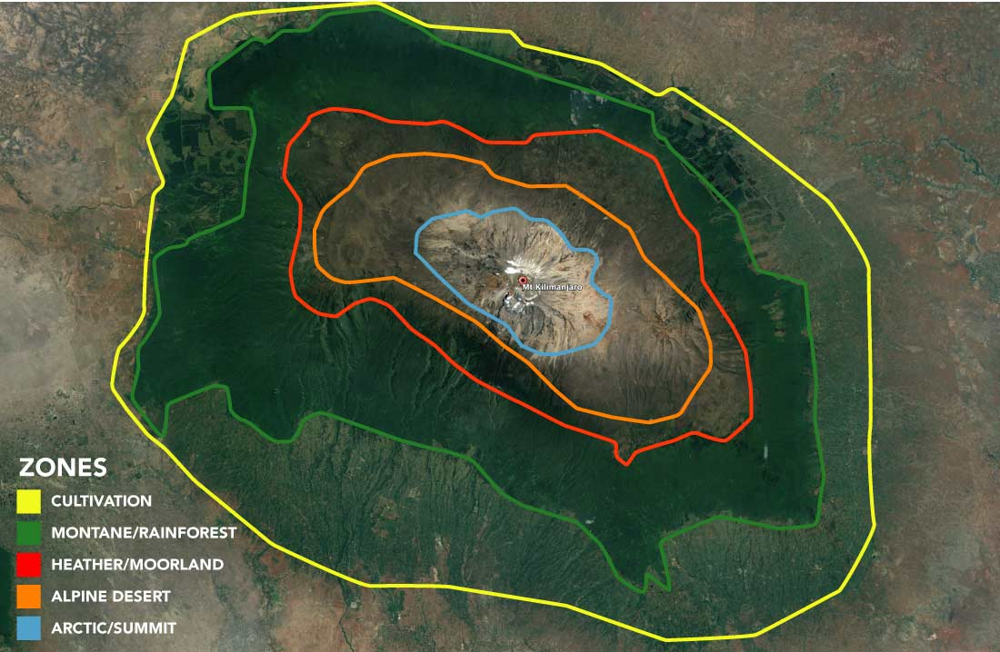
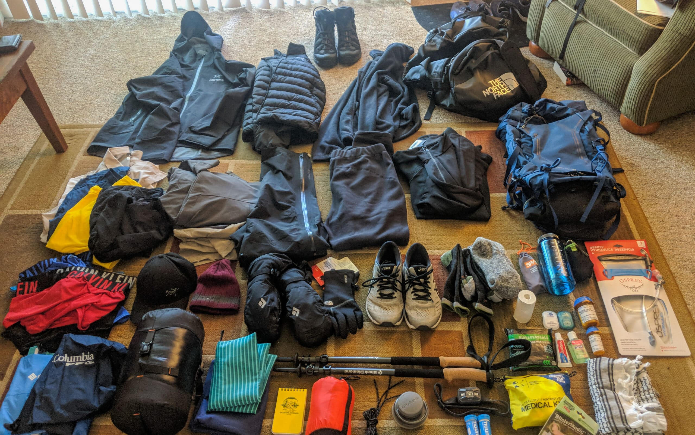
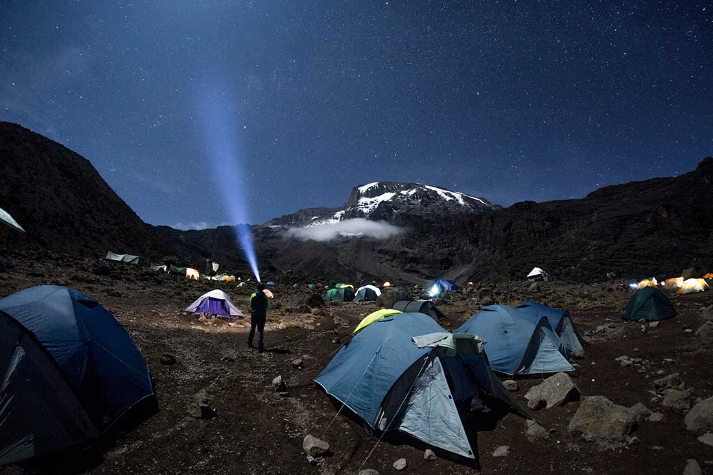

Climbing Mount Kilimanjaro is an incredible adventure, a journey that tests your limits and rewards you with breathtaking scenery and an unparalleled sense of achievement. Reaching the summit of Africa's highest peak requires more than just booking a trip; it demands thorough preparation – physically, mentally, and logistically.
This guide covers the essential steps and considerations to help you prepare effectively for your Kilimanjaro trek with Golden Memories Safaris, maximizing your chances of a safe and successful summit.
1. Physical Fitness & Training
Kilimanjaro is a non-technical climb, meaning you don't need mountaineering skills. However, it is a strenuous, multi-day trek at high altitude. Good cardiovascular fitness is crucial.
- Focus on Aerobic Training: Activities like hiking (especially uphill with a pack), running, cycling, swimming, and stair climbing build endurance. Aim for 3-4 sessions per week for at least 2-3 months before your climb.
- Include Strength Training: Strengthen your legs (squats, lunges), core, and back to handle the daily hiking and carrying a daypack.
- Practice Hiking: The best training is hiking! Find hills or mountains nearby and do long day hikes, ideally wearing the boots and daypack you'll use on Kili. Practice walking slowly and steadily.
- Simulate Conditions (If Possible): If you can hike at higher altitudes safely, do so. Otherwise, focus on building stamina for long days on your feet.
Remember: It's not about speed, but endurance. The key on Kilimanjaro is to walk "Pole Pole" (slowly, slowly).
2. Mental Preparation
The mental challenge of Kilimanjaro can be as significant as the physical one. Summit night, in particular, is long, cold, and demanding.
- Know What to Expect: Research the route, understand the daily routine, and be aware of the potential effects of altitude.
- Positive Mindset: Cultivate determination and resilience. Break the climb down into smaller goals (reaching the next camp).
- Manage Expectations: Summiting is not guaranteed. Focus on enjoying the journey and the unique experience, regardless of the outcome.
- Trust Your Team: Rely on the expertise and encouragement of your guides and crew.
3. Choosing the Right Route & Duration
As discussed on our Kilimanjaro Route Comparison page, the route you choose significantly impacts acclimatization and scenery. Longer routes (7+ days) generally offer much better acclimatization profiles and higher summit success rates compared to shorter 5 or 6-day options.
- Prioritize Acclimatization: Routes like Lemosho, Machame (7/8 day), and the Northern Circuit allow your body more time to adjust to the altitude.
- Consider Your Preferences: Think about scenery, traffic levels, and whether you prefer camping (most routes) or huts (Marangu only).
4. Acclimatization: The Golden Rule
Altitude sickness is the biggest obstacle to summiting Kilimanjaro. Proper acclimatization is paramount.
- Choose Longer Routes: As mentioned, more days = better acclimatization.
- Walk "Pole Pole": Maintain a slow, steady pace, even if you feel strong initially.
- Hydrate Constantly: Drink 3-4+ liters of water per day.
- Climb High, Sleep Low: Many itineraries incorporate day hikes to higher altitudes before descending to sleep, aiding adjustment.
- Communicate Symptoms: Inform your guide immediately if you experience headache, nausea, dizziness, or other altitude sickness symptoms. Early detection is key.
- Consider Diamox: Discuss Acetazolamide (Diamox) with your doctor as a potential aid for acclimatization (prescription required).
5. Essential Gear & Packing
Having the right gear is critical for safety and comfort. Focus on layering and quality essentials. (A detailed packing list will be provided upon booking, but here are key categories):
Layering System:
- Base Layers: Moisture-wicking (merino wool or synthetic, NO cotton).
- Mid Layers: Insulating (fleece or down jacket).
- Outer Layer: Waterproof and windproof jacket and pants (Gore-Tex or similar).
Footwear:
- Hiking Boots: Sturdy, waterproof, well broken-in high-ankled boots are essential.
- Camp Shoes: Comfortable trainers or sandals for evenings.
- Socks: Several pairs of quality wool or synthetic hiking socks (plus liner socks).
Headwear & Handwear:
- Warm Hat/Beanie: Covering ears, for cold conditions.
- Sun Hat: Wide-brimmed for sun protection.
- Balaclava/Buff: For face protection against wind and cold on summit night.
- Gloves: Lightweight liner gloves and warm, waterproof outer gloves/mittens.
Other Essentials:
- Daypack (30-40L): To carry daily essentials (water, snacks, rain gear, camera).
- Duffel Bag (70-90L): For porters to carry your main gear (soft-sided, no wheels, weight limits apply).
- Sleeping Bag: Rated to -10°C to -15°C (comfort rating). Can often be rented.
- Water Bottles/Bladder: Capacity for 3-4 liters. Bladder tubes may freeze on summit night.
- Headlamp & Spare Batteries: Crucial for summit night and around camp.
- Sunglasses & Sunscreen: High UV protection essential.
- Personal First-Aid Kit & Toiletries: Include blister treatment, pain relievers, wet wipes, etc.
- Snacks: High-energy snacks for the trail.
6. Health, Vaccinations, Visa & Insurance
As detailed on our dedicated pages:
- Consult your doctor well in advance regarding necessary vaccinations and malaria prevention.
- Check Tanzanian visa requirements for your nationality and apply for an eVisa online in advance.
- Obtain comprehensive travel insurance that **specifically covers high-altitude trekking up to 6,000m** and includes emergency medical evacuation.
7. During the Climb
- Trust Your Guides: They are experienced professionals prioritizing your safety. Follow their instructions regarding pace, hydration, and health checks.
- Communicate Openly: Don't hide symptoms of altitude sickness or other discomforts.
- Enjoy the Journey: Take time to appreciate the changing landscapes, the camaraderie, and the unique environment.
- Summit Night: Be prepared for a very early start (around midnight), extreme cold, strong winds, and a slow, challenging ascent in the dark. This is the toughest part, mentally and physically.
Final Thoughts
Preparing thoroughly for your Kilimanjaro climb significantly enhances your chances of reaching the summit safely and enjoying the entire incredible journey. By focusing on fitness, choosing the right route, packing appropriately, and respecting the altitude, you set yourself up for success.
Golden Memories Safaris is committed to providing a well-supported, safe, and memorable trek. We look forward to helping you achieve your dream of standing on the Roof of Africa!
Ask Us About Your Kili Prep